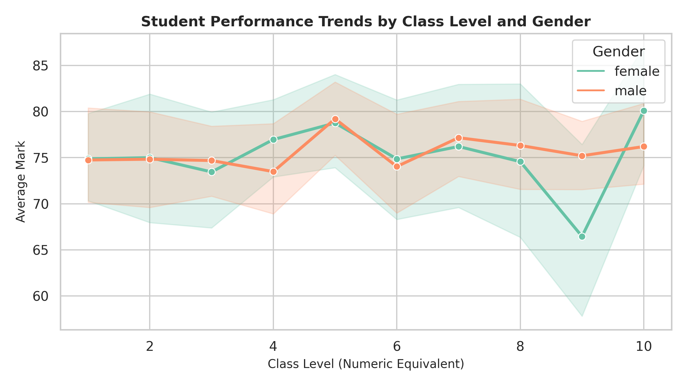

SQL - Data Cleaning & Relational Cohort Aggregations
This project replicates our end-to-end Python data cleaning and analytical pipeline directly within SQL. It creates a staging table to ingest student_toclean.csv, runs data integrity diagnostics for null values and bounding whitespace, sanitizes text strings, maps word-based class levels (including typos) into integer equivalents using CASE expressions, and queries grouped performance metrics across class levels and gender to evaluate whether gender relates to marks across age cohorts.
Step 1 & 2: Staging Ingestion & Integrity Diagnostics
We define a staging table staging_students to load raw records from student_toclean.csv and run an integrity diagnostic query to count null fields and detect leading or trailing whitespace in name and gender.
-- 1. Create staging table and bulk load CSV records
CREATE TABLE staging_students (
id INT,
name VARCHAR(100),
class VARCHAR(50),
mark DECIMAL(5, 2),
gender VARCHAR(20)
);
-- PostgreSQL / SQLite CSV import command example:
-- \copy staging_students FROM 'student_toclean.csv' DELIMITER ',' CSV HEADER;
-- 2. Data Integrity Check Query
SELECT
COUNT(*) AS total_rows,
SUM(CASE WHEN name IS NULL OR TRIM(name) = '' THEN 1 ELSE 0 END) AS null_names,
SUM(CASE WHEN class IS NULL OR TRIM(class) = '' THEN 1 ELSE 0 END) AS null_classes,
SUM(CASE WHEN mark IS NULL THEN 1 ELSE 0 END) AS null_marks,
SUM(CASE WHEN gender IS NULL OR TRIM(gender) = '' THEN 1 ELSE 0 END) AS null_genders,
SUM(CASE WHEN name IS NOT NULL AND name != TRIM(name) THEN 1 ELSE 0 END) AS names_with_extra_spaces
FROM staging_students;Step 3: Data Cleaning & Class Level Mapping
We materialize a cleaned table clean_students by filtering out records with critical nulls, trimming whitespace, normalizing gender to lowercase, and mapping word-based class names (including typo variations like 'Fifth') to numeric integer class levels.
-- 3. Create Cleaned Table with Standardized Strings and Integer Class Levels
CREATE TABLE clean_students AS
SELECT
id,
TRIM(name) AS name,
TRIM(class) AS raw_class,
CASE LOWER(TRIM(class))
WHEN 'one' THEN 1
WHEN 'two' THEN 2
WHEN 'three' THEN 3
WHEN 'four' THEN 4
WHEN 'five' THEN 5
WHEN 'fifth' THEN 5 -- Standardizing typo variation
WHEN 'six' THEN 6
WHEN 'seven' THEN 7
WHEN 'eight' THEN 8
WHEN 'nine' THEN 9
WHEN 'ten' THEN 10
ELSE CAST(TRIM(class) AS INT)
END AS class_level,
mark,
LOWER(TRIM(gender)) AS gender
FROM staging_students
WHERE name IS NOT NULL AND TRIM(name) != ''
AND class IS NOT NULL AND TRIM(class) != ''
AND mark IS NOT NULL
AND gender IS NOT NULL AND TRIM(gender) != '';
-- Inspect Cleaned Sample
SELECT name, raw_class, class_level, mark, gender
FROM clean_students
LIMIT 5;Step 4: Querying Performance (Gender vs. Class Level)
Using conditional aggregation (GROUP BY with CASE pivoting), we compute student counts and average marks across each class level split by gender—mirroring Pandas .groupby(['class_level', 'gender'])['mark'].agg(['count', 'mean']).unstack().
-- 4. Cohort Performance Breakdown by Class Level and Gender
SELECT
class_level,
COUNT(CASE WHEN gender = 'female' THEN 1 END) AS female_count,
ROUND(AVG(CASE WHEN gender = 'female' THEN mark END), 2) AS female_avg_mark,
COUNT(CASE WHEN gender = 'male' THEN 1 END) AS male_count,
ROUND(AVG(CASE WHEN gender = 'male' THEN mark END), 2) AS male_avg_mark,
ROUND(AVG(CASE WHEN gender = 'female' THEN mark END) - AVG(CASE WHEN gender = 'male' THEN mark END), 2) AS gender_gap
FROM clean_students
GROUP BY class_level
ORDER BY class_level ASC;Step 5: Exporting View & Visualizing Performance Trends
We save the cohort aggregation as a reusable SQL view vw_class_gender_performance to feed BI dashboards (Power BI / Metabase / Superset) and generate the multi-series trend line comparing average marks across class levels by gender.
-- 5. Create Analytical View for BI / Chart Visualization
CREATE VIEW vw_class_gender_performance AS
SELECT
class_level,
gender,
COUNT(*) AS student_count,
ROUND(AVG(mark), 2) AS average_mark
FROM clean_students
GROUP BY class_level, gender
ORDER BY class_level, gender;Generated Visualization Output

Figure 1.1: Trend line comparing average performance across class levels by student gender queried from vw_class_gender_performance.